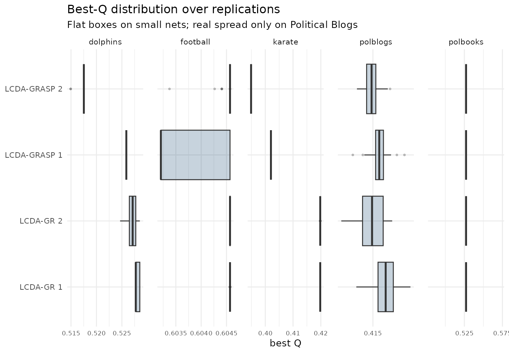

Reproducing the paper's benchmark numbers
Source:vignettes/benchmark-reproduction.Rmd
benchmark-reproduction.RmdWhat this article shows
The paper reports only means and
maxima. Here we reproduce its headline modularity
numbers on the five benchmark networks while keeping the whole
distribution over replications, and we compare against
igraph’s Louvain and Leiden under a like-for-like
multi-restart protocol.
Source. Classical benchmark networks: karate (Zachary 1977, via igraph::make_graph(‘Zachary’)), dolphins (Lusseau et al. 2003), football (Girvan & Newman 2002), polbooks (Krebs, unpublished), polblogs (Adamic & Glance 2005). GML files from the Newman netdata collection (websites.umich.edu/~mejn).
Generated. 2026-05-31 with lcdaGRASP 0.3.1, R version 4.6.0 (2026-04-24) (seed 20260527, 30 reps).
Limitations.
- alpha_c/alpha_s use package defaults (0.1, 0.3), not the paper’s exact RCL parameters.
- PolBlogs collapsed directed->undirected keeping all 1490 nodes (giant component = 1222).
- Reference Q are literature best-known; only Karate is a certified optimum.
Best modularity vs baselines and literature
res <- summ$results
best <- res |>
dplyr::group_by(network) |>
dplyr::slice_max(Q_max, n = 1, with_ties = FALSE) |>
dplyr::ungroup() |>
dplyr::transmute(
network,
best_algo = algo,
Q_best = round(Q_max, 4),
Louvain_max = round(Q_louvain_max, 4),
Leiden_max = round(Q_leiden_max, 4),
Q_literature = round(Q_ref, 4),
kind
)
knitr::kable(best, caption = "Best LCDA Q over reps vs multi-restart Louvain/Leiden and literature best-known Q.")| network | best_algo | Q_best | Louvain_max | Leiden_max | Q_literature | kind |
|---|---|---|---|---|---|---|
| dolphins | LCDA-GR 1 | 0.5285 | 0.5277 | 0.5285 | 0.5285 | best known |
| football | LCDA-GR 1 | 0.6046 | 0.6046 | 0.6046 | 0.6046 | best known |
| karate | LCDA-GR 1 | 0.4198 | 0.4198 | 0.4198 | 0.4198 | exact optimum |
| polblogs | LCDA-GR 1 | 0.4190 | 0.4271 | 0.4271 | 0.4271 | best known |
| polbooks | LCDA-GR 1 | 0.5272 | 0.5271 | 0.5272 | 0.5272 | best known |
Louvain on Karate reaches the optimum under multi-restart
A single-run Louvain can report Q ≈ 0.3715 on
Karate, which would suggest a large advantage for any competing method.
But this is an artefact of the single run: with 30 restarts the current
igraph Louvain reaches the exact optimum, so a
like-for-like comparison tells a different story:
res |>
dplyr::filter(network == "karate") |>
dplyr::summarise(
LCDA_best = round(max(Q_max), 4),
Louvain_max = round(dplyr::first(Q_louvain_max), 4),
Leiden_max = round(dplyr::first(Q_leiden_max), 4),
single_run_Louvain = 0.3715,
exact_optimum = 0.4198
) |>
knitr::kable(caption = "Karate: an apparent advantage over Louvain is an artefact of a single-run baseline.")| LCDA_best | Louvain_max | Leiden_max | single_run_Louvain | exact_optimum |
|---|---|---|---|---|
| 0.4198 | 0.4198 | 0.4198 | 0.3715 | 0.4198 |
So on Karate the proposed methods match a properly tuned Louvain/Leiden rather than beating it.
Distribution of Q across replications
Means alone hide that the advertised diversification produces a degenerate Q distribution on the small networks (sd ~ 0) and only spreads on the one large/diffuse network, Political Blogs.
library(ggplot2)
# Map Q to x directly (not via coord_flip, which silently ignores facet free
# scales) so each panel zooms to its own Q range.
ggplot(bench$results, aes(Q, algo)) +
geom_boxplot(outlier.size = 0.6, fill = "#1f4e79", alpha = 0.25,
orientation = "y") +
facet_wrap(~ network, scales = "free_x", nrow = 1) +
scale_x_continuous(n.breaks = 3, guide = ggplot2::guide_axis(check.overlap = TRUE)) +
labs(title = "Best-Q distribution over replications",
subtitle = "Flat boxes on small nets; real spread only on Political Blogs",
y = NULL, x = "best Q") +
theme_minimal(base_size = 10) +
theme(axis.text.x = element_text(size = 6.5), panel.spacing.x = grid::unit(1, "lines"))
bench$results |>
dplyr::filter(network == "polblogs") |>
dplyr::group_by(algo) |>
dplyr::summarise(Q_mean = round(mean(Q), 4), Q_sd = round(sd(Q), 4),
Q_max = round(max(Q), 4), .groups = "drop") |>
knitr::kable(caption = "Political Blogs: all four variants trail the best baseline by ~2%.")| algo | Q_mean | Q_sd | Q_max |
|---|---|---|---|
| LCDA-GR 1 | 0.4163 | 0.0014 | 0.4190 |
| LCDA-GR 2 | 0.4150 | 0.0015 | 0.4171 |
| LCDA-GRASP 1 | 0.4156 | 0.0011 | 0.4184 |
| LCDA-GRASP 2 | 0.4149 | 0.0009 | 0.4168 |
Takeaways
- LCDA-GR reproduces “match best known” on the four small networks.
- Multi-restart matters: Louvain on Karate reaches 0.4198 (the optimum) over 30 restarts, so single-run baselines overstate any advantage.
- Coverage gap: on the only large network the methods trail Louvain/Leiden by ~2% — the advantage is benchmark-dependent.
Reproducibility and data provenance
The numbers above are read from datasets shipped with the package;
nothing is re-run at build time. Each dataset records the package
version that generated it (not necessarily the version
you installed: the generators are re-run only when the algorithms
change), the release it first shipped in, and a SHA-256 checksum
matching inst/extdata/SHA256SUMS:
do.call(rbind, lapply(c("repro_benchmarks", "repro_summary"), lcda_provenance))
#> dataset generated_by generated_on first_release shipped_in
#> 1 repro_benchmarks 0.3.1 2026-05-31 0.3.1 0.3.2
#> 2 repro_summary 0.3.1 2026-05-31 0.3.1 0.3.2
#> sha256
#> 1 2e086d88f2ebd85a67eec35c9bf6c9da1515d8f59e8b57f33ccc76ad7af0aba5
#> 2 1c69543fc7808ea9cd9c4b410b4fb74d1f5d7ee2410a7c2ab1fd8695d5ee091aRegenerate with data-raw/10_repro_benchmarks.R (single
documented seed, 30 restarts).
Honest reading. On the four small networks the proposed methods match a fully tuned multi-restart Louvain/Leiden (they reach the exact optimum where one is known), and they trail by ~2% on the only large network (Political Blogs). The contribution is the joint leader designation at no modularity cost, not a modularity win.
References
- Blondel, V. D., Guillaume, J.-L., Lambiotte, R., & Lefebvre, E. (2008). Fast unfolding of communities in large networks. J. Stat. Mech., P10008. doi:10.1088/1742-5468/2008/10/P10008
- Traag, V. A., Waltman, L., & van Eck, N. J. (2019). From Louvain to Leiden. Scientific Reports, 9, 5233. doi:10.1038/s41598-019-41695-z
- Newman, M. E. J., & Girvan, M. (2004). Finding and evaluating community structure in networks. Phys. Rev. E, 69, 026113. doi:10.1103/PhysRevE.69.026113